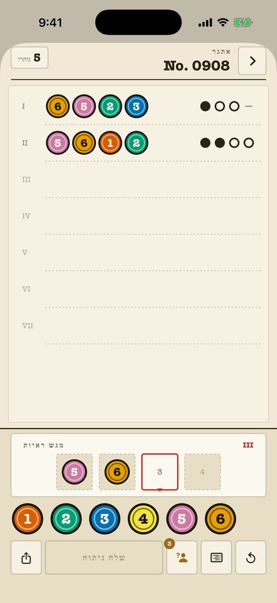

תיקים קלאסיים
240 תיקים ממתחיל ועד מאסטר, כל אחד דף ממוספר בתיק. מונה הניסיונות למעלה; הסימנים הם דיו טהור — נקודה, טבעת, קו — ולעולם אינם תלויים בצבע.
- כל ניתוח קודם נשאר על הדף להצלבה.
- פתקים על הלוח מסמנים צבעים שנשללו ושאושרו.
- ההגדרה «סימני צורה» נותנת לכל צבע צורה ייחודית.
- 40 התיקים הראשונים בחינם.